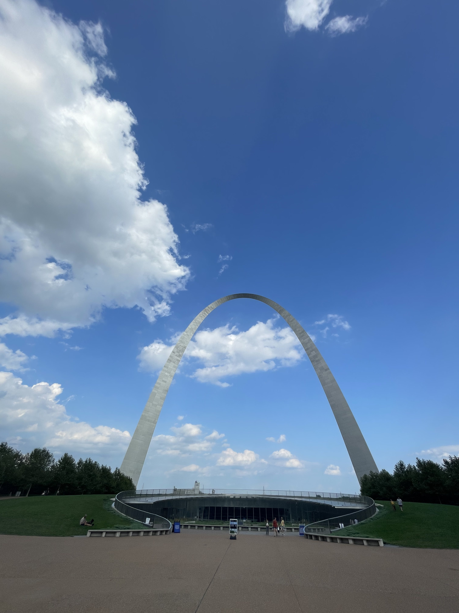
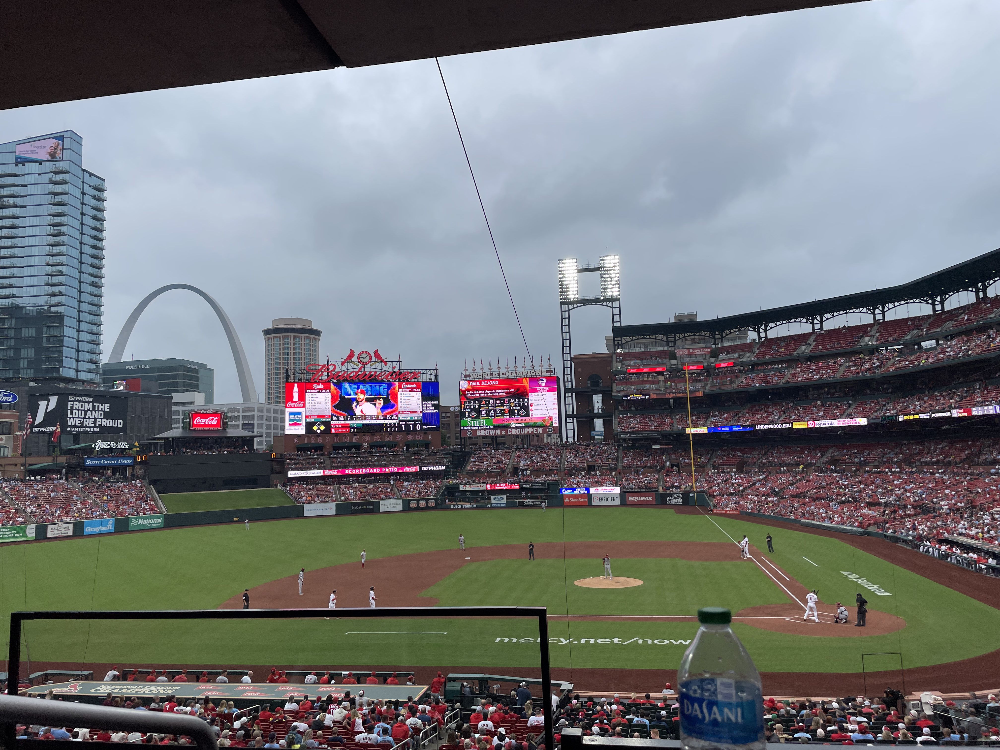
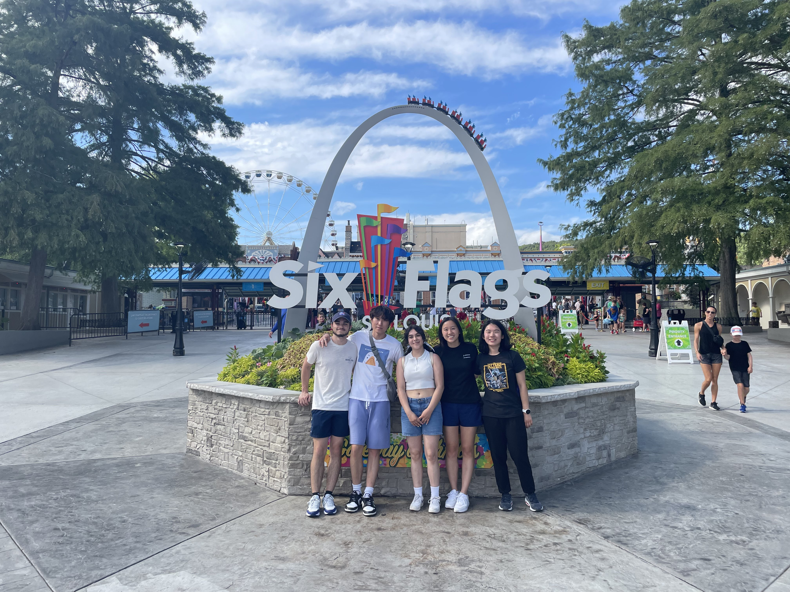

Reflecting on the valuable lessons learned and skills acquired during my internship and other fun activities.
I began my internship with Boeing on June 2024 and ended August 2024 at St. Louis, Missouri for 10 weeks after obtaining my Secret Clearance. I was placed on the F-15 Mission Systems team and I was super excited to write code that would be put onto actual fighter jets. Unfortunately, almost all of work was under this Secret Clearance so I am limited with what I can share.

Boeing was very different from my previous internship at Asurion. Because of the Secret Clearance, much of the work I did had a much more strict structure and procedures that must be followed. Additionally, Boeing is a contractor for various companies and organizations which meant the work I was doing had to be handled differently depending on who the contractor was. It was most definitely a change in pace in the working environment but it was a welcome one.
I want to especially thank my manager Andre Jemmott for the help before, during and after the internship, providing guidance, support and making sure I had meaningful work to do. I also want to thank my coworkers, especially James, Sarah, Lindsay and Luke for all the coding debugging, the onboarding, and making me feel welcome during the internship.
I fulfilled my goals of writing production level code that went into an actual fighter jet during the internship. I met a ton of great people, employees and interns alike, and had a blast at Boeing building the future of defense.
